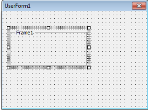
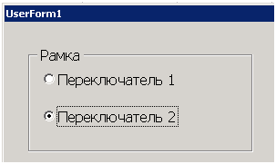
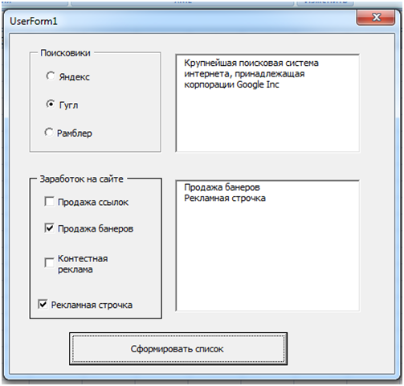

июля 20, 2015
июля 20, 2015  admin
admin Элемент управления Frame
июля 20, 2015 admin
Frame — это просто рамка, которая выделяет прямоугольную область на форме и позволяет организовать элементы управления

рис . 1.1 Элемент управления Frame на панели ToolBox

рис. 1.2 Элемент управления Frame на форме
Помещенные внутрь рамки переключатели считаются взаимоисключающими, остальные элементы управления ведут себя точно так же, хотя иногда бывает полезно с точки зрения наглядности свести вместе под одной рамкой, к примеру, набор флажков. При желании рамку можно сделать невидимой, установив для свойства BorderStyle значение 1 и убрав значение свойства Caption.

рис. 1.3 Пример элемента управления Frame на форме
Добавление объектов класса Frame полезно в том случае, если нужно создать группу заданных объектов (например, флажков или переключателей) или просто, сделать визуальное оформление. Единственные свойство класса Frame, которое мы будем использовать:
BorderStyle – отвечает за отображение рамки, 0 – рамка не будет отображаться (будет видна простая вмятина), 1 – будет отображаться рамка цвета, заданного в свойстве BorderColor.
Свойство Caprion носит чисто информативный характер.
Рассмотрим пример: На поверхности UserForm мы разместим два блока, один – набор переключателей OptionButton, а второй – набор флажков CheckBox. Рядом будет находиться текстовое поле TextBox и список ListBox и одна кнопка. Когда мы будет выбирать значения в блоке с переключателями, в текстовом поле будет отображаться информация о выбранном элементе. При нажатии на кнопку, будет происходить добавление в список тех значений, которые отмечены галочками во втором блоке.
В редакторе кода для формы нужно разместить следующий код:
Private Sub OptionButton1_Change()
Dim Data As String
Data = “ ИТ-компания, владеющая одноимённой системой поиска в Сети и интернет-порталом. Поисковая система «Яндекс» является четвёртой среди поисковых систем мира по количеству обработанных поисковых запросов”
TextBox1.Text = Data
End Sub
Private Sub OptionButton2_Change()
Dim Data As String
Data = “Крупнейшая поисковая система интернета, принадлежащая корпорации Google Inc”
TextBox1.Text = Data
End Sub
Private Sub OptionButton3_Change()
Dim Data As String
Data = “Новости России и мира. Электронная почта. Поиск информации в интернете. Развлекательные и коммуникационные сервисы. Программы и приложения.”
TextBox1.Text = Data
End Sub
Private Sub UserForm_Initialize()
TextBox1.MultiLine = True
Frame2.BorderStyle = fmBorderStyleSingle
End Sub
Private Sub CommandButton1_Click()
Dim ctrl As Control
For Each ctrl In Frame2.Controls
If ctrl.Value = True Then
ListBox1.AddItem ctrl.Caption
End If
Next
End Sub
Процедуры от OptionButton1_Change до OptionButton4_Change отвечают за обработку события Change для каждого объекта OptionButton, расположенного на поверхности Frame. Переменная Data содержит данные типа String, в ней хранится информация, которую нужно вывести в текстовом поле.
CommandButton1_Click – тут происходит обработка клика по кнопке, в цикле происходит перебор коллекции всех элементов, что лежат на второй рамке класса Frame vba языка. Если значение Value какого из элементов ровно true (поставлена галочка), то содержимое Caption для выбранного объекта будет добавляться в список ListBox.
UserForm_Initialize – тут происходит настройки базовых свойств: определяем для текстового поля то, что оно будет многострочным (свойству MultiLine присваиваем значение true). Для объекта Frame2 класса vba Frame мы определяем, что бы отображалась рамка (свойству BorderStyle присваиваем значение fmBorderStyleSingle).

Пример можно скачать здесь